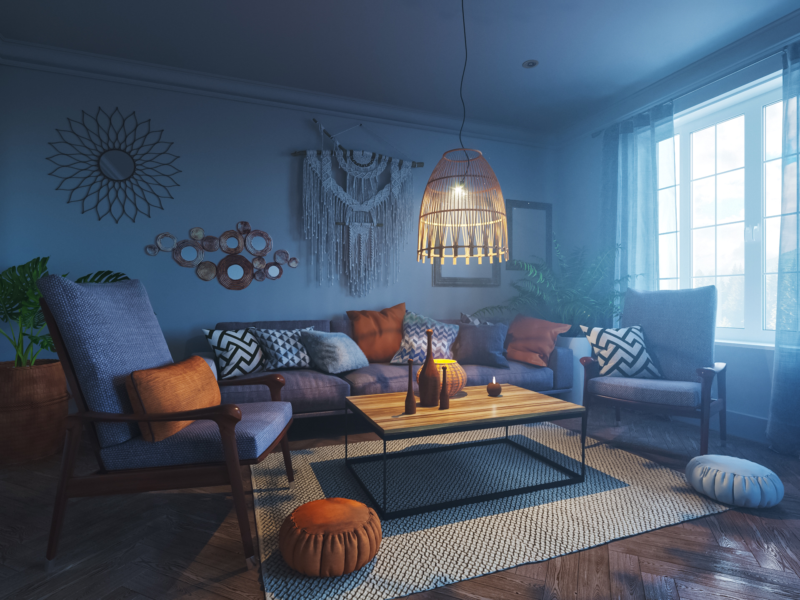

Levictoria
Визуализация спальни в современном стиле
Дизайн и визуализация кафе-кондитерской

Дизайн и визуализация гостинной в стиле бохо
Визуализация ванной комнаты при мастер-спальне
Визуализация спальни в стиле эклектика
Дизайн и визуализация ванной комнаты